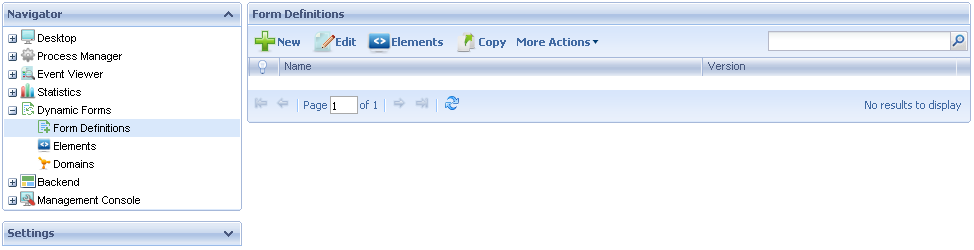
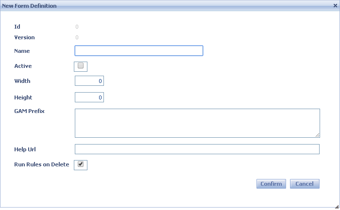
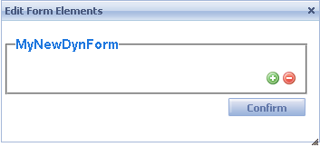
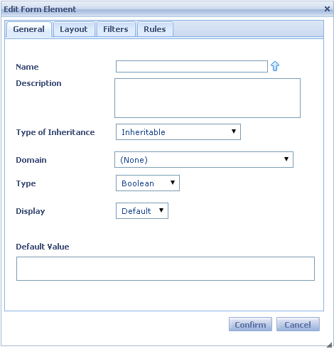
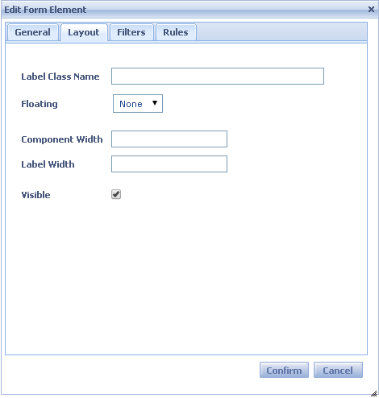
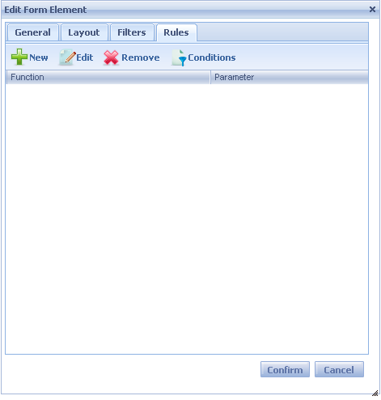

The Form Definitions component allows the user to view all the existing dynamic forms and manage all its properties, as well as to create new ones. Form Definitions can change dynamically without the need for coding, compiling, generating and deploying your Workflow applications.
The following figure shows the Form Definitions interface:

In the following sections you will find the description of the different components.
The following toolbar buttons allow you to perform some actions over the Form Definitions in the grid.
- New: allows the user to create a new Form Definition. The user will view the following dialog window where the properties of the new Form Definition can be set:

Where:
- Id: ID of the Form Definition—read-only.
- Version: version of the Form Definition—read-only.
- Name: name of the Form Definition—to be used when selecting it from the Application form property.
- Active: whether the Form Definition is enabled.
- Width: width of the form when the Form Definition is called.
- Height: height of the form when the Form Definition is called.
- GAM prefix: name prefix to be used from GeneXus Access Manager—applies only when Integrated Security Level property is enabled.
- Help Url: link to the help documentation of the Form Definition.
- Run Rules on delete: sets whether the rules of the Elements must run when the Form Definition is deleted.
- Edit: allows editing any property of the Form Definition.
- Elements: allows adding or deleting Elements from a Form Definition. The user will view the following dialog where he can add or delete elements from a Form Definition:

In order to add an element, press , and to remove it. When the add button is pressed the following dialog is displayed:

The General Tab allows selecting an existing element or creating a new one—see Elements.

The Layout tab allows defining how the control is drawn—see Elements.

The Filters Tab allows adding filters.

Finally the Rules allow adding rules that apply to the elements. Once the rules are defined, conditions can be applied.
- Copy: creates a new Form Definition with the properties of the selected one.
- New Version: creates a new version of the Form Definition—the older versions are set as disabled and can be found using the filters.
- Display: displays all the properties of the Form Definition.
- Remove: removes/deletes the Form Definition.
- Import: imports an xml containing the Form Definition using an .xml file.
- Export: exports the Form Definition to an .xml file.
The components grid, located in the center, shows all the existing Form Definitions.
This grid consists of the following columns:
- Name: name of the Form Definition.
- Version: displays the description of the Form Definition.
|